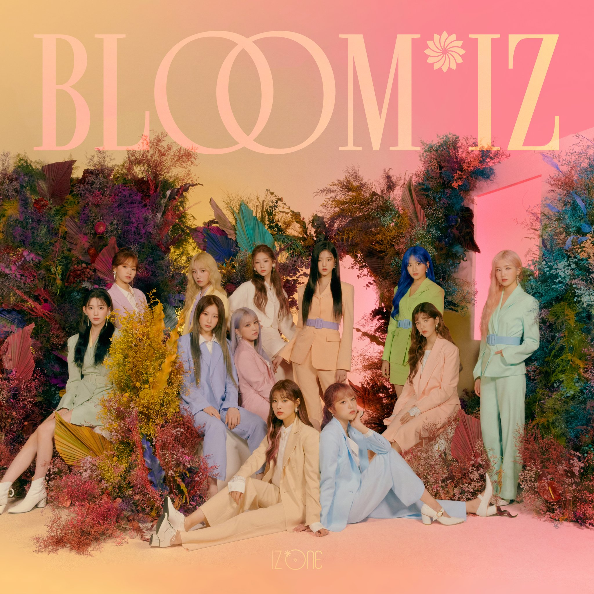

IZ*ONE은 2018년 8월 31일 엠넷의 서바이벌 오디션 프로그램 프로듀스 48 최종회 생방송에서 선발된 12명의 멤버로 구성된 한일 합작 프로젝트 걸그룹이다. 그룹명인 "IZ*ONE"은 12명의 소녀들이 하나가 되는 순간이라는 뜻. 영어로 그룹명을 표기할 땐 "IZ"와 "ONE" 사이에 별표 기호 *를 넣어 "IZ*ONE"으로 표기한다.
소속사는 시즌 1, 2 데뷔 그룹인 I.O.I, Wanna One 매니지먼트를 담당하였던 YMC엔터테인먼트가 아닌 CJ ENM 산하 레이블인 신생 기획사 오프더레코드 엔터테인먼트로 결정되었다. 특기할 만한 점은 프로듀스 48에 참여한 장규리의 소속 그룹인 fromis_9도 이곳으로 소속사가 바뀌면서 두 그룹이 같은 회사의 매니지먼트를 받게 되었다는 점이다. 한솥밥을 먹게된 IZ*ONE과 fromis_9 멤버 사이에는 많은 인연이 있다.